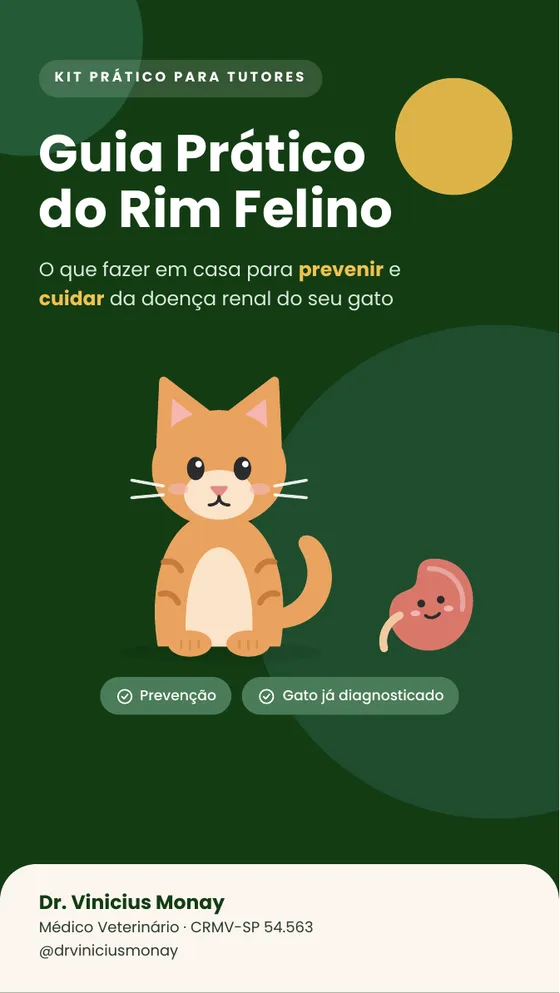
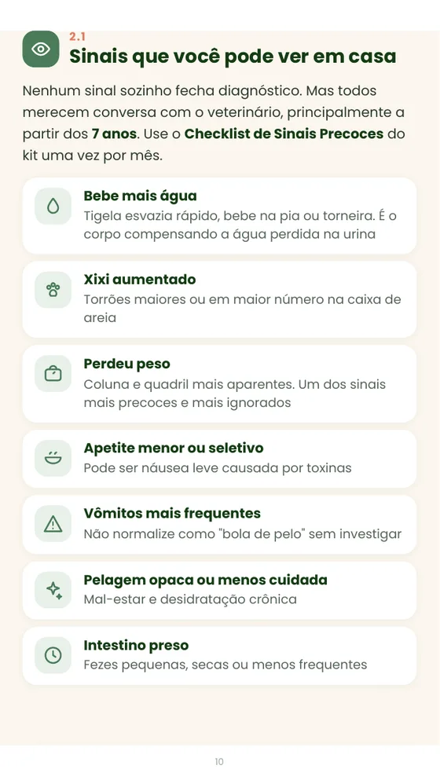
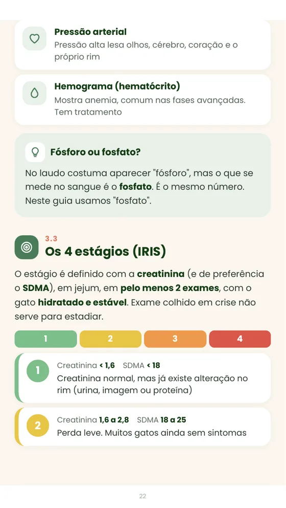
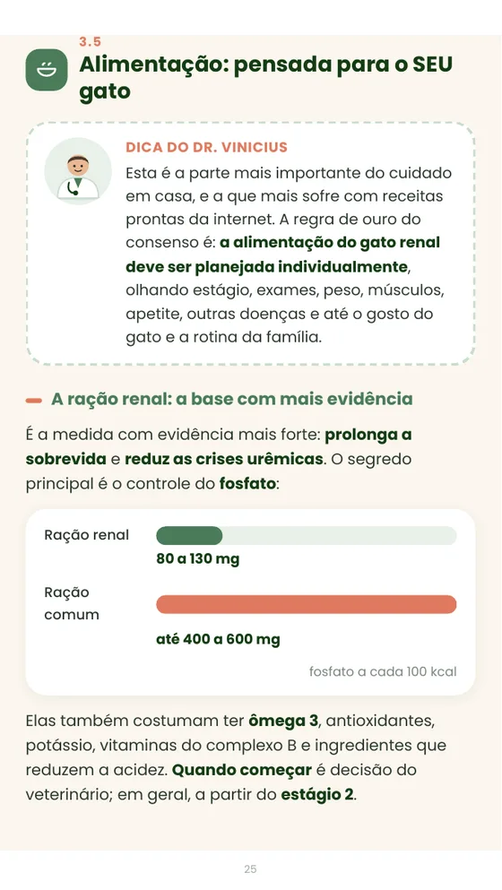
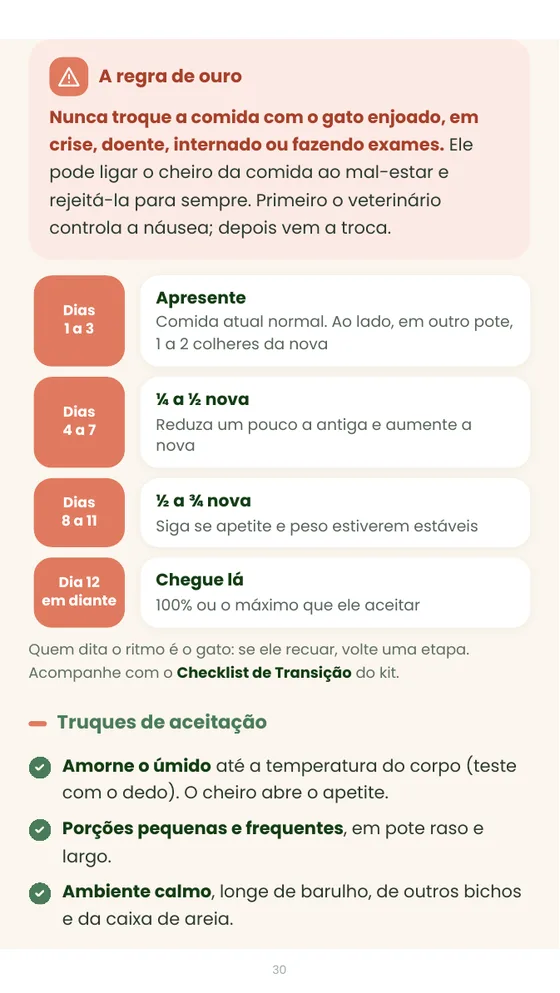
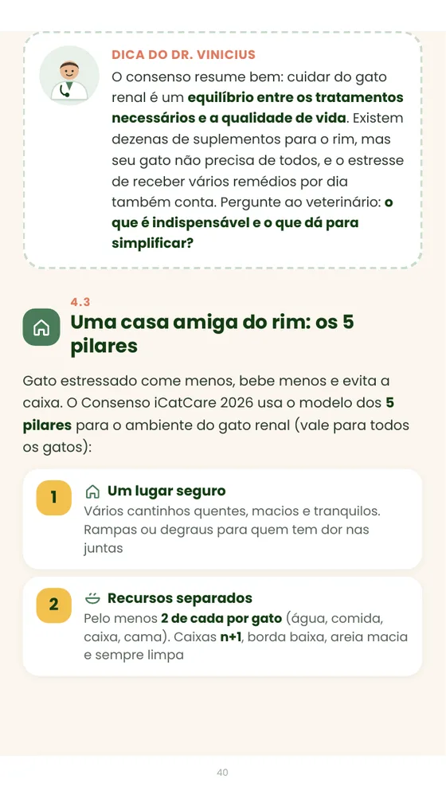
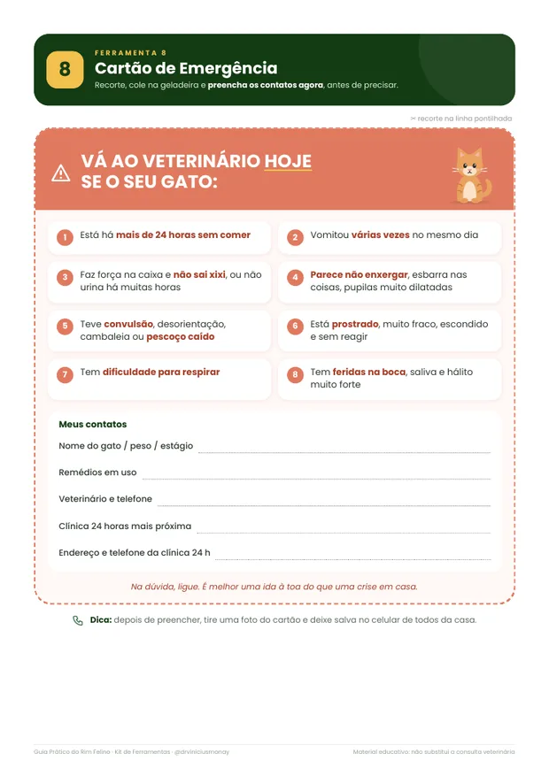
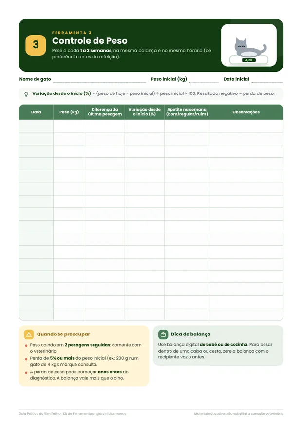
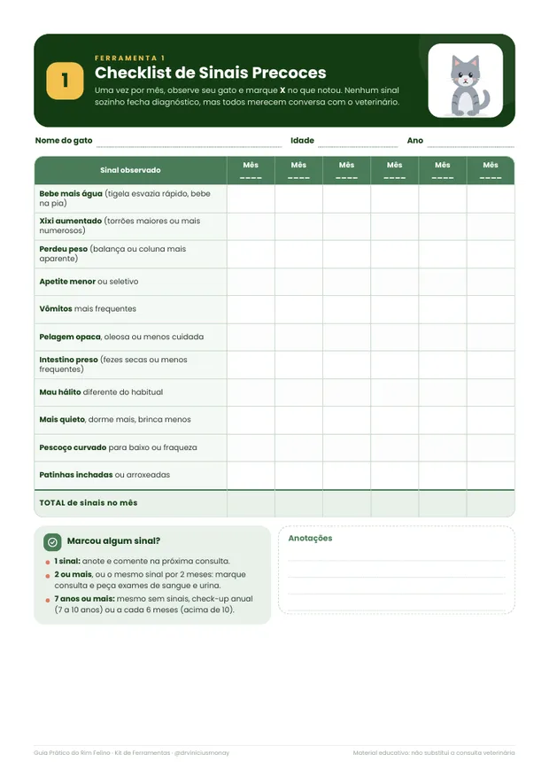

Um guia prático, feito por veterinário, para você saber exatamente o que fazer em casa: proteger o rim desde cedo, perceber os primeiros sinais e cuidar do gato que já tem doença renal.

O veterinário falou "renal" e você saiu do consultório com mais dúvidas do que respostas.
Seu gato está bebendo mais água ou fazendo mais xixi e você não sabe se é normal.
Ele emagreceu e todo mundo diz que "é da idade".
Ele recusa a ração renal e você tem medo de ele ficar sem comer.
Você olha o laudo e não entende creatinina, SDMA, fósforo, estágio.
Você tem medo de errar na comida, no remédio ou de perceber uma crise tarde demais.
A culpa não é sua. A doença renal foi feita para passar despercebida, e quase ninguém explica ao tutor o que fazer no dia a dia.
O rim tem uma reserva enorme. Ele trabalha calado até boa parte da função ter ido embora. Por isso o que você faz antes dos sinais óbvios vale tanto.
é a idade em que o novo consenso recomenda começar os exames de triagem renal, mesmo sem nenhum sinal. Mas os hábitos que protegem o rim começam muito antes.
gatos de 11 anos ou mais que estavam saudáveis no check-up já tinham alteração renal nos exames 2 anos depois. Entre 7 e 10 anos, foram 8%.
é quanto tempo antes do diagnóstico a perda de peso já pode ter começado, em silêncio.
A doença renal foi a principal causa de morte de gatos a partir de 5 anos em um grande estudo no Reino Unido.
Fonte: 2026 iCatCare consensus guidelines on the diagnosis and management of chronic kidney disease in cats, Journal of Feline Medicine and Surgery.
Um guia de 46 telas pensado para ler no celular, com ilustrações, caixas de dica e resumos de 1 minuto. E ferramentas para usar na rotina.








Por que gatos são tão propensos e por que a doença é tão silenciosa.
Os sinais precoces, o check-up na idade certa, a água como pilar número 1 e os perigos da casa.
Como ler o laudo, os 4 estágios IRIS, o que acelera a doença, alimentação individualizada, transição, apetite e hidratação.
Seu gato não precisa viver com dor. E os 5 pilares de uma casa amiga do rim.
Como usar cada ficha e levar tudo organizado para a consulta.
8 fichas em PDF e a mesma coisa em planilha do Google Sheets, que faz as contas e acende alertas coloridos sozinha.
Você aprende a proteger o rim desde cedo e a descobrir qualquer mudança logo no início: sinais, check-up na idade certa, água e os perigos da casa.
Você aprende a ganhar tempo e qualidade de vida: laudo, estágios, alimentação, apetite, hidratação e quando correr.
Pagamento seguro processado pela Hotmart.
Leia, use as ferramentas e, se não fizer sentido para você, peça o reembolso pela Hotmart em até 7 dias. O risco fica comigo.
Sim. Metade do guia é a Trilha Prevenção: os sinais precoces, o check-up certo para cada idade, como aumentar a água e o que evitar em casa. A doença renal é muito comum em gatos idosos, e descobrir cedo muda tudo.
Vale. A Trilha Suporte fala de apetite, hidratação, fluido subcutâneo, sinais de alerta e qualidade de vida em todas as fases. As ferramentas ajudam você a acompanhar a evolução junto com o veterinário.
Não, e nenhum material sério deveria prometer isso. O guia ensina você a cuidar melhor em casa, entender o laudo e aproveitar melhor cada consulta. Diagnóstico, remédios e doses continuam sendo do veterinário que acompanha o seu gato.
Não, de propósito. Dieta caseira sem cálculo é arriscada para o gato renal, porque carnes, vísceras e ovos têm quantidades muito diferentes de fósforo e cálcio. O guia explica quando a alimentação natural ou mista pode ser uma ótima opção e por que ela precisa ser formulada para o seu gato.
O pagamento é processado pela Hotmart. Assim que ele for confirmado, você recebe o acesso por e-mail: o guia em PDF, o kit de ferramentas para imprimir e a planilha para usar no Google Sheets.
Serve, e é o melhor momento para começar. Água, peso, alimentação e cuidados com a casa protegem o rim por anos. O guia também mostra com que idade começar os exames de triagem e com que frequência repetir.
Serve. O guia vale para todos, e as fichas podem ser impressas quantas vezes você precisar, uma para cada gato.
Sim. Todo o conteúdo segue o Consenso iCatCare 2026 sobre doença renal crônica em gatos, publicado em setembro de 2026, e o estadiamento da IRIS.
Você tem 7 dias de garantia. Se achar que o guia não é para você, pede o reembolso direto pela Hotmart, sem precisar explicar o motivo.
Cada mês sem medir é um mês de sinais que passam em branco. Comece hoje, pelo preço de um lanche.
Quero o guia por R$ 29,90